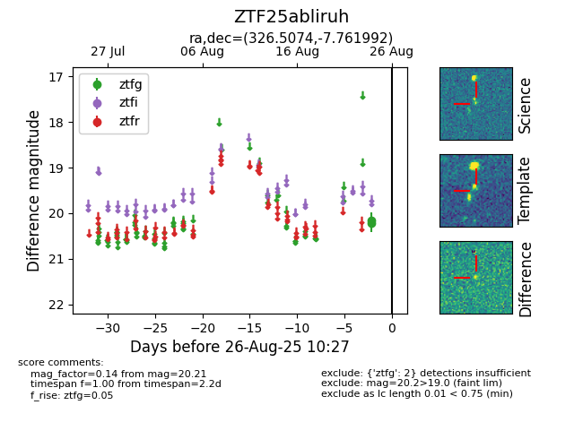

Target ZTF25abliruh at 2025-08-26 10:27, see:
FINK: fink-portal.org/ZTF25abliruh
Lasair: lasair-ztf.lsst.ac.uk/objects/ZTF25abliruh
ALeRCE: alerce.online/object/ZTF25abliruh
alt names
ZTF25abliruh (ztf,fink)
coordinates:
equatorial (ra, dec) = (326.5074,-7.76199)
galactic (l, b) = (47.8974,-42.08617)
photometry
last ztfg=20.21
2 ztfg detections
